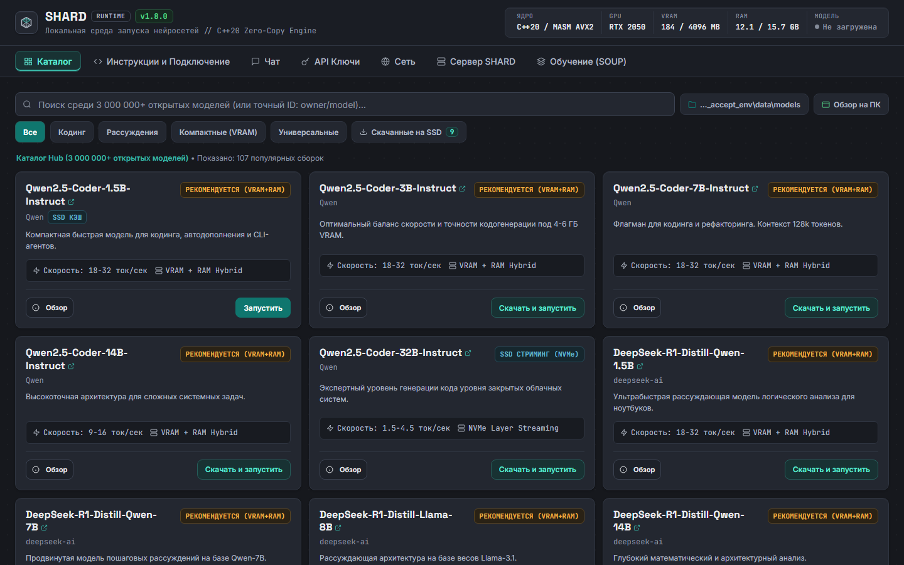

Hard OS safety reserves
Probes live CUDA VRAM and RAM while locking 400 MB VRAM and 2 GB RAM for your desktop so nothing freezes.
Combine free VRAM and system RAM across machines on your network to execute open-weight models that exceed one card. Drop-in OpenAI and Anthropic APIs.
pip install shard-engine
Probes live CUDA VRAM and RAM while locking 400 MB VRAM and 2 GB RAM for your desktop so nothing freezes.
Reads exact Hugging Face config.json GQA heads, calculates KV cache at 4K–32K context, and scores every quant tier.
Passes hidden-state tensors sequentially from stage to stage over Ethernet or Wi-Fi and streams SSE tokens to your IDE.
Capacity is not speed. Pooling lets a 32B model fit across everyday cards that crash OOM alone, while single-GPU stays faster whenever weights already fit locally.
Exact shard fit reserve math (400 MB VRAM and 2 GB RAM reserved for OS).
llama-server --rpc 192.168.1.14:50052 -ts 7782,14336 -ngl 999
Network hops add latency per token. If a model fits cleanly on one local GPU, local execution stays faster.
Four explicit commands take you from an empty terminal to a real multi-PC cluster serving Cursor, Claude Code, or any OpenAI/Anthropic SDK.

SHARD detects local NVIDIA GPUs, system RAM, CPU threads, and available runtimes, then launches the Web Dashboard and local API gateway on port 8000.
$ pip install shard-engine
$ shard startInspect exact Hugging Face architecture parameters, GQA KV-cache size, and quant tiers so you never waste bandwidth on a checkpoint that crashes OOM.
$ shard fit Qwen/Qwen2.5-Coder-7B-Instruct
GPU: RTX 2050 (4.0 GB) | RAM: 15.7 GB | KV: 0.23 GB
Q2_K 2.9 GB 3.1 GB VRAM 999/28 layers ~28.7 t/s GPU
Q4_K_M 4.6 GB 3.8 GB VRAM 22/28 layers ~14.6 t/s HYBRIDCreate a LAN pool or cluster on the coordinator. Other PCs discover it on UDP 8001 (or connect by IP) and opt in with explicit VRAM and RAM quotas.
# On coordinator PC
$ shard lan create StudioPool
# On worker PC (explicit compute contribution)
$ shard lan join 192.168.1.10 ABCD-EFGH --shareUse Cursor, Claude Code, OpenCode, or the official OpenAI and Anthropic SDKs without changing your workflow or sending prompts to a third-party cloud.
client = OpenAI(
base_url="http://localhost:8000/v1",
api_key="shard-local"
)Scroll or select any subsystem to see its live 40×40 LED schematic, exact Python modules, and CLI behavior.
Probes usable VRAM and RAM per node after OS safety reserves, scales KV cache by context and parallel slots, assigns proportional layer ranges with CUDA preference, and warns when single-GPU local execution is faster than crossing the network.
$ shard cluster create \
Qwen/Qwen2.5-Coder-14B-Instruct --strategy auto
$ shard cluster plan
Stage 0 worker-1 (RTX 3060) L00-20 11.4 GB
Stage 1 worker-2 (RTX 4060) L20-36 7.7 GB
Stage 2 worker-3 (RTX 2050) L36-48 3.7 GBYou choose solo mode or opt-in LAN worker quotas. SHARD enforces OS memory reserves automatically, always asks before sharing hardware, and never runs silently.
Local diagnostics that never leave your machine.
Toggle between solo local mode and opt-in LAN worker sharing.
Explicit command or consent flag required in every mode.
Blocked in engine code regardless of configuration.
Honest engineering boundaries matter more than marketing promises. Local inference, hardware fit, LAN pooling, and worker resilience are implemented and tested; Internet-wide cooperative networking is the active direction.
$ shard start # Launch FastAPI gateway + Web Dashboard (:8000)
$ shard status # Inspect loaded model, GPU VRAM, RAM and endpoints
$ shard key --gen # Generate local API bearer token
$ shard doctor # Check Python, GPU, runtimes and ports$ shard fit Qwen/Qwen2.5-Coder-32B-Instruct # Pre-flight VRAM, RAM & KV-cache verdict
$ shard list --category coding # Browse local and Hugging Face catalog
$ shard run Qwen/Qwen2.5-Coder-7B-Instruct # Download (if needed) and open terminal chat
$ shard models-dir D:\shard-models # Point model storage to a custom drive$ shard lan create OfficeLab # Start master & UDP 8001 beacon
$ shard lan join 192.168.1.10 ABCD-EFGH --share # Opt-in as ggml-rpc-server worker
$ shard lan status # View peers, pooled VRAM and -ts weights
$ shard lan off # Kill switch: stop sharing and disconnect$ shard cluster create Qwen/Qwen2.5-Coder-14B-Instruct --strategy auto
$ shard cluster plan # Inspect layer partitions & RTT overhead
$ shard cluster resilience # Inspect worker FSM, timeouts and metrics
$ shard cluster leave # Detach worker gracefully and free KV cache$ shard network identity # Inspect local Ed25519 Node ID (shn_...)
$ shard network discovery-serve --port 8090 # Run your own signed discovery directory
$ shard network relay-serve --port 8091 # Run your own blind AEAD WebSocket relay
$ shard network doctor # Audit ports, LAN interfaces, STUN & tunnels$ shard training doctor # Check optional soup-cli (Python 3.11-3.13)
$ shard training dataset build --task sft # Export consent-gated, redacted feedback
$ shard training start --dataset <id> --base Qwen/Qwen2.5-Coder-1.5B-InstructPick your setup to see practical requirements.
Runs 1.5B to 14B quantized GGUF models locally in pure GPU or hybrid VRAM+RAM mode via llama-server.
$ pip install shard-engine # Core CLI, API, Dashboard, GGUF RPC & LAN
$ pip install "shard-engine[ml]" # Adds Transformers & SafeTensors pipeline$ git clone https://github.com/avelone123123/shard.git
$ cd shard && docker compose up -d$ git clone https://github.com/avelone123123/shard.git
$ cd shard && pip install -e .
$ shard testDirect answers to the engineering questions people ask first.
No. BitTorrent is a conceptual analogy for cooperative peer-to-peer resource pooling. SHARD does not download torrent chunks or split generated text; it partitions neural network layers across workers using llama.cpp RPC or PyTorch pipeline sockets and passes intermediate activations sequentially.
No. Capacity is not throughput. Pooling memory lets you run models that cannot fit on a single GPU, but each generated token travels sequentially across machines. If a model already fits cleanly in one local GPU, local execution is faster.
Never. Worker contribution is strictly opt-in (--share or consent=true), rejects unconsented join calls with HTTP 403, enforces hard OS memory reserves, and can be stopped immediately with shard lan off or shard cluster leave.
The coordinator detects TCP loss, timeouts, or missed heartbeats, frees KV caches and scheduler slots, and reforms on surviving healthy nodes. PyTorch pipeline mode can resume via full-context prefill replay without duplicating tokens; GGUF RPC restarts before token 1 or returns a structured API error after streaming starts.
Not yet. Public discovery and relay hosts are not deployed yet. Today SHARD runs reliably locally, across your LAN, over VPNs like Tailscale or WireGuard, or with your own self-hosted discovery-serve and relay-serve nodes.
pip install shard-engine